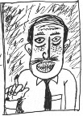
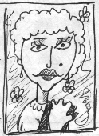
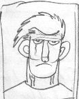
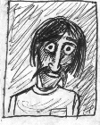
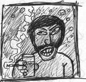
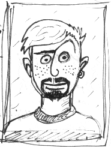
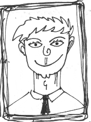

$AiRLER
BERKAZ SACAK

1931'de Adapazari'nin Libidik koyunde dogmu$tur. Babasi Osman Nurcan Mi$ka
Sacak da $iir edebiyatimizin, kadrolu $airi oldugu icun otomatikmen (zorla
biraz da) $air olmanin tadina doymu$tur. $iirlerini belli belirsiz yazardi.
Eskiz gibi, posa gibi, oz gibi. Hep nobel hayaliyle ya$adi, Coutment odulune
aday olmayi isterdi. Fakat bir kotu ozelligi mevcuttu Sacak'in, $iirlerini
kaybederdi. Kaybetmedigi $iirleri: "On Maymun", "Ruzgar Felan", "Kayip
Cennet", "Vay be!", en mahluse $iiridir "Vay be!". Hep birlikte koltuklarimiza
$oyle bir yaslanalim kendi sesinden bu guzel $iiri dinleyelim demek isterdik,
lakin, Berkaz Sacak, 1995'te aramizdan feci bir trafik kazasi sonucu
ayrilmi$tir.
VAY BE!
Neymi$ o oyle yav, kac dedin?
200? Saattemi? Avrupa arabami?
Mi? Yapma yaw. kac dedin?
Vay be!
Neymi$ o oyle...
KAYYiME RAH$AN HANIMEFENDi

1702'de Mersin'de dogmu$tur. Ingiliz babasi Edward Bronnser tarafindan ve
annesi Aynehayat Rah$an yardimiyle Ingiltere'de kucuk bir kolejde ogrenim
gordukten sonra, Ankara'da guzel yurdumuzun ba$kentinde yuksek ogrenimini
$ey etmi$tir. O yillarda Ankara'da bir tiyatroda fahi$e Merilynn rolu ile
buyuk sukse $eyeden Rah$an, sava$ta ailesini kaybedince Bursa'da bir
gonulevi'ne kaydedilmi$tir. Burada 20 yil $eylik yaptiktan sonra Bursa'ya
ta$inan (o zamanlar Izmir'e de Bursa deniyordu) Rah$an hanimefendi,
terzi olarak 5 yil $eettikten sonra ba$i acik oldugu gerekcesiyle
yurtdi$ina $eyedilmi$tir. Macar bir baron ile evlendikten sonra, asil
meslegi olan $airlige $ey oldumu$tur. Ilk $iiri "AH" tum dunyada basilinca,
ayni hafta Macar baron da iki fahi$eyle basilmi$tir. Bo$anan (vesile itibariyle)
Rah$an, oglu Lalami'yide yanina alarak Afrika'ya $eetmi$tir. Afrika'da
Nijerya'da bir kac romani hic dikkate alinmayinca Turkiye'ye, Bursa'ya (Izmir
olani) donen Rah$an hanim, "OH" adli $iiri ile de "Kaderutansincilar" akiminin
da oncusu olmu$tur. 1751'de Ispanya'da hunharca $eedilerek oldurulmu$tur.
En onemli $iiri: "AH"
($iiri cok uzun oldugu icin (416 sahife) yer veremiyoruz)
KISMET ZiPPO

4 Eylul 1954'te dogmu$tur. Ilkokulu 4. sinifta terketmi$tir. Bir sure
amcasi Muhlis Zippo'nun tuhafiye dukkaninda tezgahtarlik yaptiktan
sonra, ailesiyle birlikte Samsun'a ta$inmi$tir. Orada tani$tigi bir
muezzin (Osman Kavaktor) onu yillarca egitmi$tir. Genclik yillarinda
siyasi olaylara katilarak kendini eglendirmi$tir. Oyledir, herneyse...
Kismet Zippo'nun $iirle tani$masi 80'li yillara rastlar (denk du$er).
Siyasi goru$unu o yillarda degi$tirir. Bir ba$ka bakar siyasete. Acisi
degi$mi$tir artik. Arkada$lariyla bir kitabevi acar ayni zamanda
$iirlerini de yazar. Ilk $iir kitabi "Onbe$ Guzel Kiz" o donemin en cok
satan $iir kitaplari arasinda gosterilir. 1986'da "Para Kar$iligi Altin"
odulunu almi$tir. Ayni yil "Bronz Kul Tablasi" odulunu almaz, reddeder.
Taviz vermez... Yav$amaz... Yillarca $iir yazar. Olur. (16 Kasim 1994)
Odullu $iiri "Alsam Seni Bufeden" 1987'de, o donemin unlu hafif muzik
sanatcilarindan Aliye Top$eker tarafindan $arki haline getirilse de ne
onemi var?
ALSAM SENI BUFEDEN
Yagmur yagiyor di$arida,
Ve belki seller akiyor...
Huysuz bir ruzgar gogusumu dovuyor,
Sokaklar a$k kokuyor koyu koyu.
Kocan kocan obek obek
Ve ben seni ariyorum
Lacka olmu$ surat ifademle...
Bir sigara icsem, icsem mi?
Veyahut elimi cebime atsam anahtarla oynasam?
....
Seni istesem, bufeden, kac paraysa!
Parasi neyse veririm
Olur mu?
Alsam seni, minciklasam koklasam
Burnuna uflesem?
Enseye tokat?
Ama yoo! Sen... sen! sen!!..
Ben? Bufeden? Yani?
Ne diyom ben yaa!?...
KOR ILIK

12 Temmuz 1962'de Tunceli'de dogmu$tur. Ilk, orta, yuksek falan
Tunceli'de bitmi$ olup ayriyeten program analizi konusunda katalizor
gorevini ustlenmi$tir. Ustelemesine ragmen el $akalarina devam ettigi
icin yakin arkada$i Cezmi Kaluk'u oldurmekten sekiz yil Afyon
cezaevi'nde yatmi$tir (oyle ayaklari uzatip tembellik eder cinsinden).
Ilk $iir kitabi "Fakir Zulum"unu 1980'de cikartmi$tir. $iirleri daha cok
detaylar, deginilmeyen olgular, daha az da genellemeler ve ustelemeler
uzerine belirginle$ir. Evli ve dort cocuk sahibi Kor Ilik 1995'te vefat
etmi$tir (kalp krizi dogrultusunda). Detaycilar akiminda ismi
gecmektedir. Onemli $iirleri: "Tarhana Corbasi", "Lazca", "Yuklu
Trenler", "Yaz Melegi", "Sevsene Lan"..
TARHANA CORBASI
Bir gun, onceden islatilir,
Elle ufalanir, (suyu suz)
Kaynar suyu uzerine dok, (corbaya)
Bak bakalim corba kivaminda mi,
Corba kivaminda yalnizca kaynar,
Kisik ate$te yarim kapakli,
Pi$ir! Yag at belki, At az salca..
Ve nane at bir de ey ac insan.
AHMET CEPKANYAK

1949'da Adana'nin yakinlarinda bir kol saati buldu. Fakat dogumu 1938'de
gercekle$ti. Annesi surekli seyahat eden bir ogretmen oldugundan (tayin,
atama gibi $eylerle alakasi yok) cok yer gordugu iddia edilir. Cepkanyak,
$iirlerinde bir buhran, bir $evkap veyahut latife nazmi kullanmazdi. O
ba$kaydi...
$iirleri: "Sesimi cikarmiyorum kadere", "Baskili Secenek", "Vur Patlasin",
"Yazlik", "Mor menek$e de ne?", "Cayir keyfi", "Al", "Dumanli Bahce",
"Ba$im Donuyor Bu Ak$am", "Yazlik 2", "Gunduz Kemeri", "Elustunde kimin
eli var?"... Bir de "Don gonlume be" kitabi vardir. (Ahmet Cepkanyak 16
Aralik 1988'de a$iri alkollu tavla oynarken olmu$tur)
SESiMi CIKARMIYORUM KADERE
Dogrusunu soylemek gerekirse,
Sesimi cikarmiyorum kadere.
Ulan hep ben mi uzulecem diyorum,
Hakkaten de oyle oluyor.
Bi tavla oyniyalim diyorum,
O da ne 9.4! Acik kapi!
Ulaaeeeen, ulaaeenn.
Hic ses etmiyom vallayi
Dogrusu, tum bunlarin alayi,
Benim kadere olan uzakligim,
Ulaaeeen hey heeooy!
Susuyom vallayi, ne olcek
Bilemeyom...
(Ahmet Cepkanyak bu $iirini bir Cuma ak$ami yazmi$tir. $iir aslinda 24
sayfadir. Orijinalini yer olmadigi icin veremiyoruz...)
NURi CALKANTILIA$K
25 Aralik 1955'de Nev$ehir'de dogmu$tur. Kesinlikle muslumandir. Turktur,
ovunur... Ogrenimini Ankara semalarinda Gavur kolejini bitirerek tamamlarken,
neden hep cakmaklarini kaybettigini hic du$unmedi... ?... Yani niye du$unsun
ki canim!?... Olabilir... Oldu da... 4 Aralik 1974'te Eni$tesi ile birlikte
pavyona gitmi$tir... 7 Aralik 1974'te babasindan feci bir $ekilde dayak
yemi$tir. Yine ayni yil kizarkada$i Magrur'la ni$anlanmi$tir. Magrur hanimin
ona edebi bilgiler nuksettigi kulislerimizde kulaktan kulaga sefer
olunmu$tur (Ne kulisi yaa!).... En cok satan $iir kitabini aslinda e$i Magrur
hanim yazmi$tir...
$iirleri: "Altineldivenlu kadin", "Mizansen", "Korkuyorsam namerdim",
"Seninle Aya kadar", "Isirma oyle ey", "Hey birader"... En gusel iki
$iiridir "Isirma oyle ey" ve "Hey birader"...
Nuri Calkantilia$k halen ya$amini surdurmektedir... Yillardir...
(Olmeden!)....
ISIRMA OYLE EY
Madem israr ediyorsun,
Soyleyeyim...
Seviyorum seni bilesin.
Kalbimdeki sevgiyi goresin,
Dikkat et de,
Pilavi dokmeyesin.
Yana$ bir gulum, yav$a hele
Siritma bre oyle deveogludeve!
Bak, soyluyorum
Ben seni seviyorum...
rum...
Ac pencereyi, koktu icerisi,
Gelir, tirsarim $imdi herhangi bir superisi,
Laf soz i$itmeyelim biz en iyisi
Isirma oyle ey!...
Hey bre isirma hey!
HEY BiRADER
Hey birader
Bakarmisin,
$u adres neresi?!,
Yabancisiyimda alemin..
HI HI, anliyorum...
Iyi sabahlar.
Hey birader bakarmisin,
Demin sordumda,
Arkada$ bilemedi,
$u adres neresiydi,
Lazimda...
Oylemi, HI,HI, anladim..
Iyi oglenler...
Hey birader baksaniz ya bir!?
Adres varda bende.
Bilemiyorum, belki siz anlatirsiniz bir bir!...
Sizdemi? Himm, anladim...
Iyi Ak$amlar...
Hey birader
Bir durun!
Kulak verin bir bana
Baksaniza bu yana
Yabanciyimda alemin
Bulamiyorum sittimin
Belki siz bilirsiniz!
Yada kariniz,
Kom$unuz,
Torununuz,
Torbaniz,
Lutfen siz soyleyniz,
Bilirsiniz, neresidir burasi!
Oylemi? Durun, gitmeyin!
Durun! Heey biraderler
Insanlar, bacim, yenge bakarmisin!
Delikanli, kocum... Kimse bilmiyormu bu adresi, soyleyiniz lutfen...
Yabancisiyim alemin.
Yardim edin sittimin!...
AN TAVA
$iir edebiyatimizin odullu $airlerindendir. Dunya capinda unu olan bu nefis
$airimiz $oyledir...
An Tava 20 Temmuz 1960da Ankara'da dogmu$tur. Ilk ve ortaokulu Ankara'da
ba$ariyla bitirdikten sonra cok cali$arak universiteye girmi$tir. Ankara
Universitesi Turk Dili ve Edebiyati bolumunu 3. sinifta terk eden unlu
$air, universitede tani$tigi Lale Tirsova ile dunyaevine girmi$tir.
(5 Aralik 1986)
Bir donem fransiz $iir edebiyatindan ceviriler yaparken, Mugla-Aydin
yolunun 17. kilometresinde polisler de onu cevirmi$tir. Polisler "maksat
killik olsun" diye onu karakola davet etmemi$lerdir. Arabayi daha
dikkatli surmesini temenni ettikten sonra olay mahallinden Surmeli-Tandoven
mevkine yonelmi$lerdir. O esnada celik bilek ve rodi, profesor Sallaso'yu
sIkI$tIgI salincaktan kurtarmakla me$gulken, unlu $airimiz An Tava ilk
$iir kitabini bitirmi$tir bile!...
O donemin en me$hur kitabevi Maymun yayimciliktan piyasaya surulen
bu ilk kitabi cok alki$ toplasa da ulke puanina yetmemi$tir.
An Tava'nin $iirlerinde hep bir ne$e bir sevdicilik vardir. En kotu $iiri
bile okuyana zevk, kudret, esenlik verir. Unlu Fransiz ele$tirmen Caprot
Moniel bakin onun $iirleri icin ne demi$! "Cok guzel, inaniniz gulmekten
altima muhlis kaciracaktim. Hic boyle bir akicilik, ce$itlilik, tabiri
yerindeyse devri-daim gormedim. Cok guzel hakkaten tum $iirleri...
Hah hah hay"
An Tava'nin bazi $iirleri: "El el ustunde kimin eli var", "Bezirganba$i",
"Kisa Maltepe, tulumba tatlisiyla gitmiyor", "Avrupa, avrupa, duy sesimizi",
"Kisir yedim sabaha kar$i", "Kiz sende hic terbiye yok mu", "Bugs Bunny'le
balik avi", "Tanrim bana sevap yaz"...
An Tava halen, Ankara $airler odasinda dani$manlik yapmaktadir.
NOT: An Tavanin $iiri "El el ustunde kimin eli var", Ahmet Cepkanyak'in $iiri
"El ustunde kimin eli var" ile kari$tirilmamalidir. Ikiside bamba$ka $eylerdir.
E$BER TRANSATLANTiK

2 Haziran 1969'da Istanbul'da dogmu$tur. Ilk ve ortaokulu (5+3) biraz
zorlanarak bitirmi$tir. (6+5). Agabeyi Bravo Supergunship'le birlikte
lise yillarinda bol bol cizgiroman okumu$, atari oynami$ derslerini bir
kenara itivermi$tir.
Bu, onun liseden atilmasina kadar surmu$tur. 26 ya$ina glediginde,
genclik yillarini harcadigini anlami$tir. Okuyup, adam olmak varken, o
serseriligi, vurdumduymaz bir ya$ami secmi$tir. 30 ya$inda evlenmeyi
uygun goren Transltlantik, karisinin edebiyata olan ilgisi sayesinde
$iir yazmaya, beyzbol oynamaya, bilgisayar oyunlari yapmaya ba$lami$tir.
Onun $iirler; olmadik enstantaneler icerir, sungun, lapa lapa, ictensi
ve yumu$ak bir anlatimi vardir Transatlantigin. Bugune kadar yazdigi tum
eserlerini 4 kitapta toplami$tir. (Dondum, Yandim, Guldum, Durdum).
E$ber Transatlantik, halen Mugla'da $iir operatorlugu yapmaktadir.
"Durdum" isimli 4. ve son kitabindan sizler icin iki $iir sectik.
buyrun...
RIVER RAID KOPRUSU
Ah... Gonlum isindi, ciger tombelek,
Joystick kokusu sindi mubarek.
Gelmeyin ustume a dosttlar,
Bu oyun beni oldurecek...
Bir... Iki... Uc... Jeton mu dayanir bu aciya,
Sankim ramboynan pridator kar$i kar$iya.
Yemye$il vadilere kopru kurmu$, tank dikmi$, $arjor bo$altmi$lar.
Halimiz, dermanimiz yok, Haberimiz yok.
River Raid koprusunu tutmu$lar.
Saldiracak gucumuz yok...
KOCA YUSUF'UN GOZLERI
Bir destan bu...
Destan ki daglari yikacak, denizleri kurutacak.
Destan ki gok yarilacak, evren sarsilacak...
Oh Yusuf'um Ohh...
Sen degil miydin, 3 atip 5 diyen,
Sen degil misin Pepsiyle corba icen...
Of Yusuf'um Ooff...
Bu alem seni mi bilir, bana mi sorar ki,
Tepelerden inerler, ruzgarlarla...
Bak Yusuf! Yusufum! Ac o koca ye$il gozlerini!
Ordalar Yusuf, hi$imla, sinsilikle, sana geliyorlar!
Aah!
Yusuf? Yusuuf?
Harbi mi lan?...
IRFAN WEDNESDAY

1 $ubat 1967'de Siirt'de dogmu$tur. Ilkokulu ve ortaokulu Siirt'te
bitirmi$tir. Babasi Turhan Wednesday, onun Liseyi okumasinda herhangi
bir sakinca gormediginden, yine Siirt'te kalmasini ve ogrenimini
surdurmesini pek uygun gormu$tur. (27 Mart 1985, ogle yemegi sonrasi,
Siirt)
Halihazirda Liseyi de bitiren Irfan Wednesday'e universite kapisi
aralanmi$tir sanki!?... ?.... Ankara Universitesi, I$letme fakultesini
kazanan Irfan Wednesday, el altindan $iirde yazmaktan kendini
alamamaktadir. (Universite yillari)
Takribi munhazirda sanat egitimininde uzerinde ho$ duracagini sabit
goren Wednesday, 3. siniftan sonra ozel dersler alarak, sanat ya$amini
kendine irdelemi$tir...
Bu vesileyle $iir yaziyor, takla atiyor, seviniyor, seviniyor,
seviniyordu. Kizlarla gulu$uyor, icki iciyor, zirtapozlarla gezer.
Mumkunse hic uzulmuyordu. Sanki o bir, goncagulun tomurcugu, yahut bir
leylak huzmesi, kahkul benegiydi. Bundan cikar uman $er odaklari bunu
firsat bilmezler mi? Hemen adi kotuye ciksin diye onu kotulediler.
Yilmayan Wednesday, $irleri ile onlara bir tokat gibi cevap vermektedir.
Ne$ecilik akiminin genc gorunen temsilcilerinden olan Wednesday $u
siralar Atv'de per$embe geceleri saat 3 ile 3.5 arasi ekranda
gorebilirsiniz. (Uydu antenli supersonik atrak$inli ozel tvlerde)
Ne$ecilik akimina damgasini vuran onemli $iirleri: "Cay iciyorsamda
sanmaki simit severim", "Bisiklet tekerimin milleri, cok hizlaninca
gorunmuyor bile", "Cicekciden cicek almaya gucum yok, cicek almaninda bi
geregi yok!", "Ne$e yiyor, ne$e iciyorum sonra da i$iyorum", "Ne$e
doluyor gonlum 1", "Ne$e doluyor gonlum 2", "At arabasi", "Kahve
cekirdegim benim"...
En taninmi$ $iiri "Cay iciyorsam da, sanmaki simit severim", 1992'de
yurtdi$inda odule layik gorulse de imkan bulamami$tir.
CAY ICIYORSAM DA SANMAKI SIMIT SEVERIM
Oh inanamiyorum...
Sende ne salaksin ben kizim...
Her duyduguna ne inanirsin ki?!
Anlamiyorum...
Ellerim mi soguk? Evet, olabilir kizim.
A$k bana cok uzak, yanimda sen varken bile...
Nicin? Niicin biraz susmuyorsun!
Susmani istiyorum, sus!
Sadece bak bana oyle... Evet aynen oyle...!
Ellerimi Alaska'dan getirdim ondan soguktur.
Tabi Tabii harbiden!..
Oh! Kizim sen salaksin!
Tipki digerleri gibi..
Icelim Julia! Hadi guzelim birak $imdi!
Hayir ne olursa, viski, sut.. ah belki de cay! Icelim de...
Efendim?
Ne simiti yaa!
Julia! Sus... Lutfen, Allaha$kina sus!
Juliaa! Bak... Allahin adini verdim...
Ne simidi yaa!...